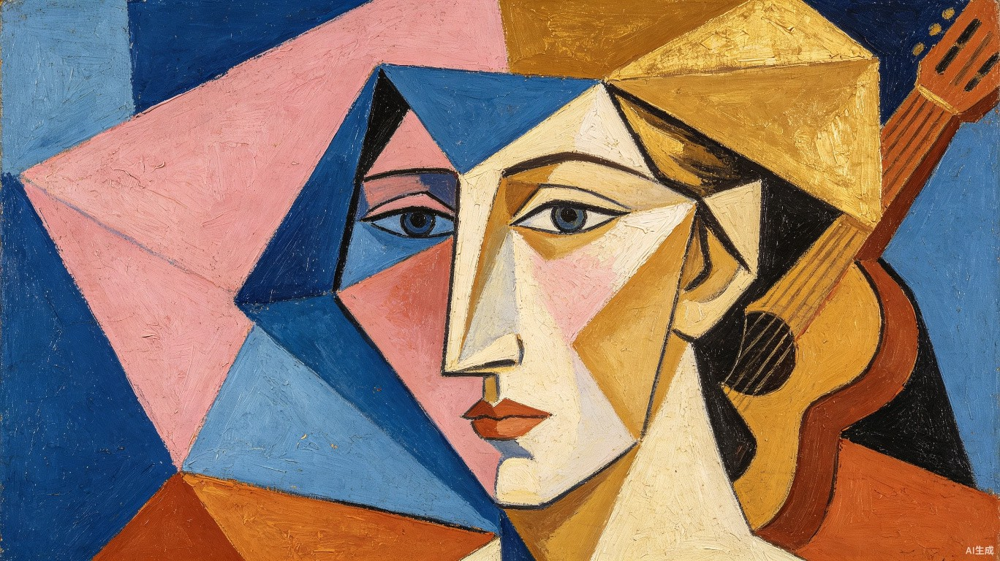

"艺术是揭示真理的谎言。"
Art is a lie that tells the truth.
蓝色时期
1901 — 1904
玫瑰时期
1904 — 1906
立体主义
1907 — 1921
PABLO PICASSO RETROSPECTIVE
展期
2026.10.01 — 12.31
地点
当代艺术博物馆

1881 — 1973
"艺术是揭示真理的谎言。"
Art is a lie that tells the truth.
1901 — 1904
1904 — 1906
1907 — 1921
展期
2026.10.01 — 12.31
地点
当代艺术博物馆